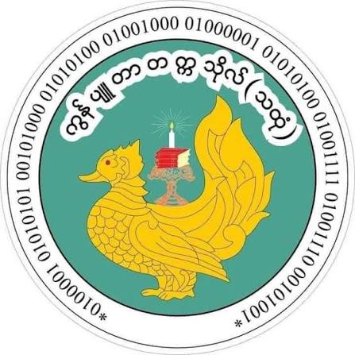
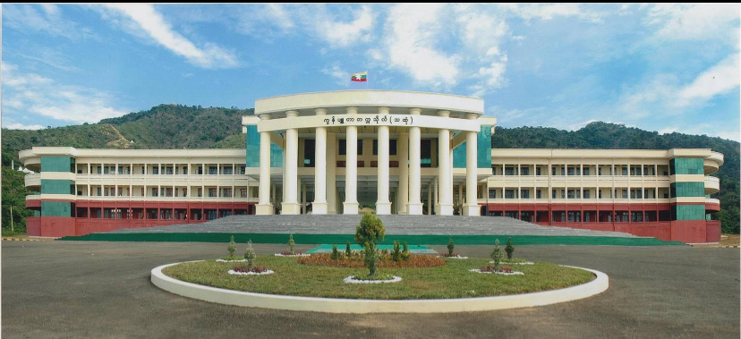
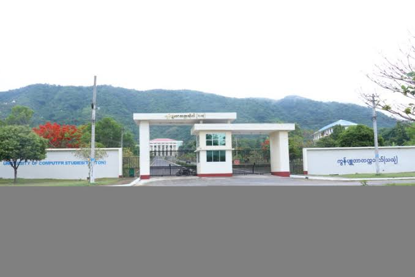
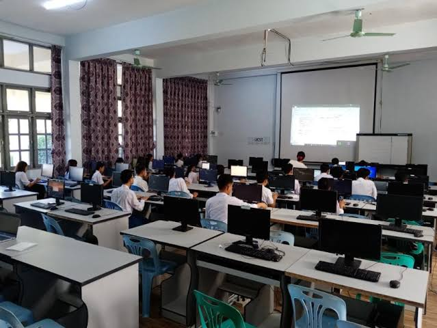
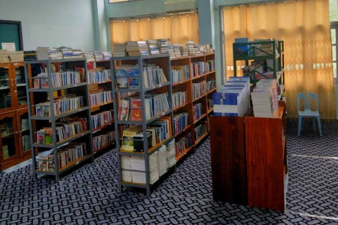

Excellence in Computer Science & Technology

Government Computer College (Mawlamyaing) was opened on 4 September 2000. On 20 January 2007, it was upgraded to university level as Computer University, Mawlamyaing. The university was moved to Thaton Township on 20 November 2011 and renamed Computer University (Thaton). Situated at the foot of Wondami Hillock in God village, Thaton Township, Mon State, the university is administered by the Ministry of Science and Technology (Myanmar).
Thaton City, Mon State, Myanmar.
(Foot of Wondami Hillock, God Village, Thaton Township)
(Subject to Annual Qualification Criteria)



Thaton City, Mon State, Myanmar